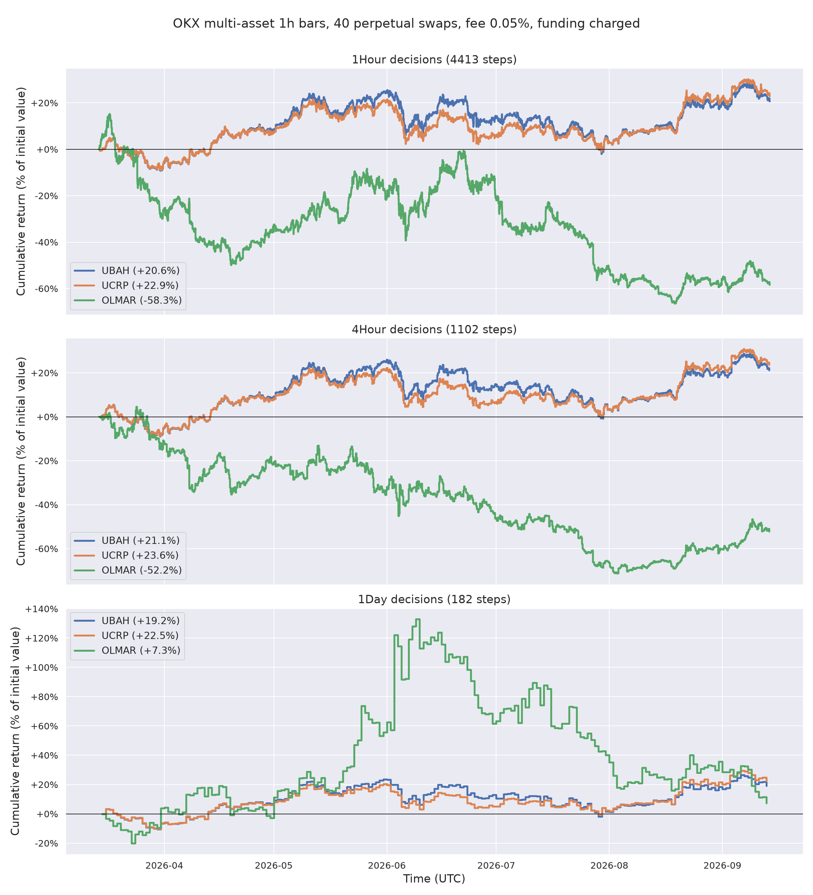

Portfolio Environment¶
PortfolioTradingEnv allocates a portfolio across N assets and cash. The agent outputs target
weights, the env fills them at the close, values the book one bar later and charges fees and
funding. N is read from the data.
Two classes share one money function, portfolio_step():
| Class | Use it for | Bookkeeping |
|---|---|---|
PortfolioTradingEnv |
evaluation, baselines, LLM actors | history with values, weights, costs and turnover per step |
VectorizedPortfolioTradingEnv |
training (steps num_envs lanes at once) |
rewards only |
Their portfolio values match to 1e-9 on the same actions, so a policy trained on the vectorized env is evaluated faithfully on the scalar one.
from torchtrade.envs.offline import PortfolioTradingEnv, PortfolioTradingEnvConfig
from torchtrade.envs.offline.infrastructure.utils import load_portfolio_dataset
bars, instruments, funding = load_portfolio_dataset(revision="v2026.09")
config = PortfolioTradingEnvConfig(
time_frames=["1Hour"], window_sizes=[50], execute_on="4Hour",
transaction_fee=0.0005, allow_short=False,
)
env = PortfolioTradingEnv(bars, config, funding=funding)
Data¶
bars is long format, one row per asset and bar: timestamp (UTC, bar open), inst_id,
open, high, low, close, volume, optional tradable. A missing row means the asset
was not tradable at that bar; its last close is carried forward. Rows that stop before the
end of the data mean the asset was delisted: the position is closed at its last tradable
close. funding (optional) has timestamp, inst_id, funding_rate. Non-finite prices or
rates are rejected.
Action, observation, timing¶
Action. Target weights [w_cash, w_1, ..., w_N]. The env normalises any vector to
w_cash + Σ|w_i| = 1 with w_cash ≥ 0, clips shorts unless allow_short=True, and caps
gross exposure at max_gross (≤ 1). Assets that are not tradable at the decision bar keep
their holding; the rest of the budget follows the requested proportions.
Observation. portfolio_weights (N+1, drifted weights, cash first), tradable (N),
and market_data_{tf}_{window} (N × window × 3: close, high, low divided by the window's
latest close; zero before an asset lists).
Timing. The agent observes bars up to and including n, the rebalance fills at close n, and the step is valued at close n+1 with funding for settlements in (fill n, fill n+1]. A done env stepped before its reset re-emits its terminal transition with reward 0.
Costs and assumptions¶
- A trade pays
transaction_fee × |notional traded|(a perpetual swap's fee). The post-trade value solvesμ = 1 − fee·Σ|w'_i − μ·w_i|exactly.transaction_feedefaults to 0; set your venue's taker rate. - Zero slippage and zero market impact: every trade fills at the close and does not move it.
- Funding is charged on the weights at the end of the step, which is exact when settlements
fall on
execute_onboundaries. - No leverage: gross exposure is at most 1, and an unlevered book cannot be liquidated.
Baselines¶
Three baselines from the online portfolio selection literature live in torchtrade.actor.
Each is a callable policy(td) -> td that writes td["action"], so it runs through
env.rollout() exactly like a trained policy, on either env.
| Baseline | Rule |
|---|---|
UBAH() |
Uniform buy and hold: equal weights once, then never rebalance |
UCRP() |
Uniform constant rebalanced portfolio: back to equal weights every step |
OLMAR(window=5, epsilon=10.0) |
On-line moving average reversion (Li & Hoi, 2012): bet on the window mean over the latest close |
from torchtrade.actor import OLMAR, UBAH, UCRP
from torchtrade.metrics import portfolio_metrics
env.rollout(env.sampler.num_exec, policy=UCRP())
print(portfolio_metrics(env.history, periods_per_year=6 * 365)) # 4-hour bars
examples/offline/portfolio_baselines.py runs all three on Torch-Trade/okx-multi-asset-1h
(40 perpetual swaps, 2026-03-12 to 2026-09-13, 1h bars, initial cash 10,000) at 1h, 4h and
1d decisions, at OKX's regular-tier taker fee of 0.05% with funding charged. These are the
numbers an RL policy trained on this dataset has to beat, on the same window and frequency:
| decisions | baseline | final value | Sharpe | max drawdown | turnover | commission | funding |
|---|---|---|---|---|---|---|---|
| 1h | UBAH | 1.206 | 1.16 | −0.219 | 1.0 | 5 | 327 |
| 1h | UCRP | 1.229 | 1.31 | −0.186 | 16.3 | 89 | 285 |
| 1h | OLMAR | 0.417 | −1.14 | −0.709 | 5506 | 18,456 | 234 |
| 4h | UBAH | 1.211 | 1.22 | −0.213 | 1.0 | 5 | 328 |
| 4h | UCRP | 1.236 | 1.37 | −0.180 | 8.7 | 48 | 287 |
| 4h | OLMAR | 0.478 | −0.95 | −0.726 | 2004 | 6,187 | 211 |
| 1d | UBAH | 1.192 | 1.09 | −0.207 | 1.0 | 5 | 327 |
| 1d | UCRP | 1.225 | 1.29 | −0.172 | 4.5 | 24 | 285 |
| 1d | OLMAR | 1.073 | 0.62 | −0.540 | 337 | 2,339 | 386 |

What to read off this. UCRP beats UBAH on every frequency with a shallower drawdown: selling what rose and buying what fell harvests the universe's volatility at a cost of a few dozen USD in commission. Funding, not commission, is the dominant cost of holding this universe (about 3% of initial value over six months). OLMAR turns the book over from 337x (1d) to 5,506x (1h); at zero fee it is the best strategy at 4h (1.30x), at the taker fee it loses half the account at 1h and 4h and keeps +7% at 1d with a 54% drawdown. Equal weight is the bar: a learned policy that does not beat UCRP after costs, on both final value and drawdown, has not learned anything the market did not hand it. The dataset's selection bias (below) lifts every one of these curves, and lifts a learned policy the same way.
Metrics¶
portfolio_metrics(history, periods_per_year) returns the standard metrics of
compute_all_metrics (return, Sharpe, Sortino, Calmar, drawdown,
win rate) plus final_value (p_f / p_0) and the episode totals of turnover
(Σ|w_filled − w_drifted| over the assets, per step), commission and funding. The scalar
env's history also exposes each of these per step through history.to_dict(). Like every
offline env's history, it covers the current episode and starts over on reset(), so
evaluate over the whole timeline as one episode (random_start=False, no max_traj_length),
as the example does.
To compare your own policy, pass it to the same rollout:
env.rollout(env.sampler.num_exec, policy=my_policy)
metrics = portfolio_metrics(env.history, periods_per_year=6 * 365)
Dataset caveat¶
The 40 instruments in Torch-Trade/okx-multi-asset-1h were selected by liquidity measured
at the end of the window, so backtests over that window carry selection bias. Choose the
universe from data before the test window.